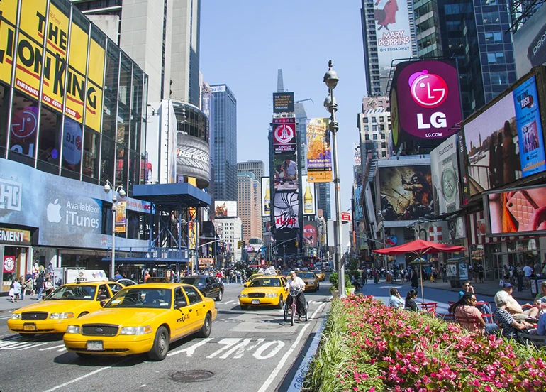
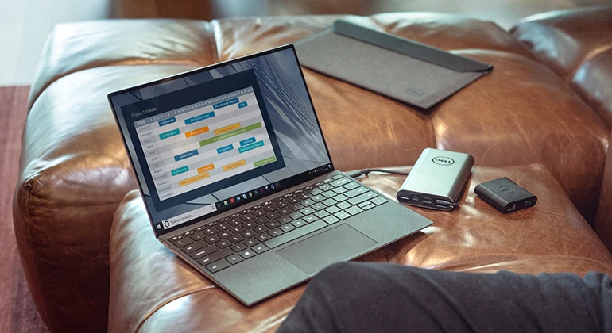
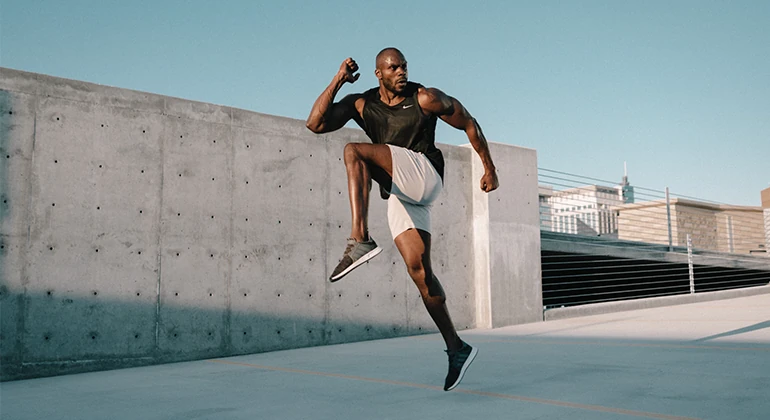
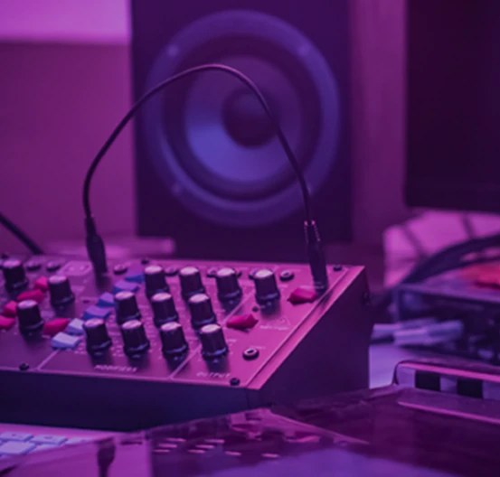

SOCIÉTÉ
La ville devient une interface : comment nos espaces publics évoluent
Mobilité, écrans, signalétique et nouveaux usages se mélangent dans le paysage urbain.
6 min · Aujourd'huiUn magazine digital pour comprendre les idées, objets et mouvements qui façonnent notre époque.
FRANCE / DIGITALInterfaces plus simples, outils plus intelligents et nouvelles manières de collaborer : le numérique change de ton.
Lire l'article ↗
Mobilité, écrans, signalétique et nouveaux usages se mélangent dans le paysage urbain.
6 min · Aujourd'hui

Le voyage lent change notre manière de photographier, de raconter et de se souvenir des lieux.
Voir le reportage ↗Après des années de minimalisme sérieux, certaines marques choisissent à nouveau la couleur, l'absurde et la personnalité.
Lire ↗

Un espace éditorial pour innovations, prototypes, interfaces expérimentales et idées en développement.
Explorer Future Lab →Chefs, producteurs, design de salle et nouvelles habitudes transforment l'expérience gastronomique.
Lire l'histoire ↗Scannez ce code avec l'appareil photo de votre téléphone pour ouvrir cette démo, comme une vraie application.